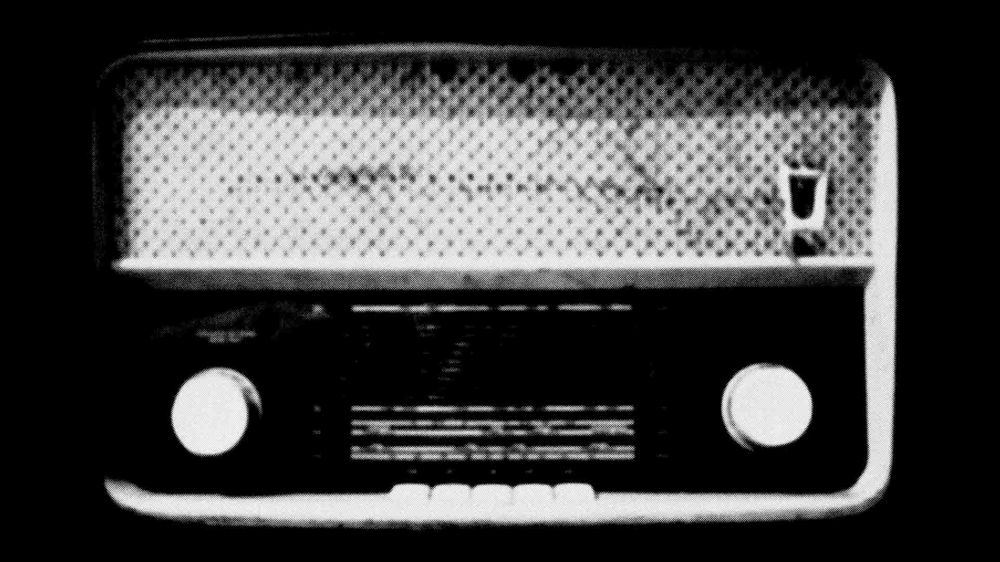

Retromania
By Pitchfork • If you're someone who spends an inordinate amount of time listening to and thinking about music, you're eventually going to grapple with the work of Simon Reynolds. He's been a fixture in the music press since first appearing in Melody Maker in the heady music press days of the mid-1980s ("Sounds, Smash Hits, Melody Maker, NME/ All sound like a dream to me," Destroyer's Dan Bejar sang earlier this year on "Kaputt"-- this is the time he was dreaming about). He's also written a number of books, and is best known in the U.S. for two in particular: 1999's Generation Ecstasy (released in expanded form in the UK as Energy Flash), the definitive study of 90s rave culture, and 2006's Rip It Up and Start Again, which quickly established itself as the essential book on post-punk.
Reynolds' latest book, just published here in the States by Macmillan, is Retromania: Pop Culture's Addiction to Its Own Past. In it, he argues that pop culture in general (and music in particular) has become obsessed with recycling from history. Through surveying both the current landscape and examining how retro has functioned in music at different points in history, and putting particular focus on how the archive of the Internet has changed the accessibility of culture artifacts, Reynolds makes a compelling case that the very nature of musical creativity and the listening experience are changing in fundamental ways. I recently spoke to him on the telephone from his current home in Los Angeles.
Pitchfork: There are two aspects to retro in your book: how it functions in the current moment and how it's worked in music and pop culture in the past. And one of the main ideas seems to be that it's intensifying as time goes on. How do you think the idea of retro fits into the current cultural climate compared to how it functioned in the 60s, 70s, or 80s?
SR: As each decade unfolds, there's a bit more of an archive, and that archive becomes more accessible, too. For me, the real turning point is when broadband Internet really took off at the end of the 90s. YouTube as well-- that's a real threshold. A lot of the stuff that fans used to trade-- like degraded copies of videos with clips of people on TV shows in the 60s and 70s-- is all going up and becoming common property. And it happened really quickly. I don't know if you've had this experience: When I speak to young music fiends, whether they're in bands or bloggers, they seem to know so much more music than I did when I was their age.
SR: They seem to listen to it methodically as well, almost like ticking off boxes. And yet they're listening to all of it in a much more randomized way; it's methodical but also jumbled up.
For me, it wasn't that much to catch up with rock history in the late 70s. You could get a Doors compilation, take the best of the Rolling Stones, two Beatles records, and a Bowie thing, and you could piece together a chronology of rock history fairly quickly. As years went by, I would discover how shaky it was, and how I'd missed out on all of this progressive rock, but a basic knowledge could be done easily. But now, someone in their formative state might have four or five decades to contend with. And it's even more so because a lot of things that were banished or forbidden by punk have all been let loose again.
When I got into music, it was easier because you were told you didn't need to bother with Led Zeppelin or Pink Floyd. If you started reading about music in 1979 in the British music press, the general view was that nothing interesting happened between 1967 and 1976 except for Bowie, Roxy, and the Stooges! It was glam rock and that was it. So part of the fun was going back to these "forbidden zones" later on and playing with the idea of taking them seriously. But it took me quite a while to do that. Now, it's gone beyond even rediscovering prog rock. People are actually actively seeking out the maligned and disregarded and trying to see if they can get something out of it. Like with minimal synth, people are taking this not-hugely-impressive music and squeezing a little bit of nourishment out of it.
Pitchfork: For a lot of people, the idea that there was a feeling in the air that everything is very future-oriented is probably almost hard to imagine. Do you remember times where you were present for this feeling of people not really caring so much about what came before?
SR: People might read my book and understand what I'm saying, but they won't necessarily feel it in the same way-- they won't have the same emotional impetus. But I do have two benchmarks that are based on lived experience.
As I remember it-- and obviously memory can distort it-- reading the music press and listening to John Peel in the very end of the 70s and early 80s, people hardly ever referred to music in terms of the past. People would refer to Public Image Ltd. and they might mention that they were clearly fans of Can, but it wasn't like the whole point of Metal Box was that PiL are Can fans. Quite the opposite. It felt like they were making music that never happened before. Which I think they were, for the most part.
Every week, the most exciting day was when we went to get the music papers-- NME in my case because that's where the most interesting, cutting-edge music writings were. There was a tremendous race to find the next thing. It got out of hand because people would put bands on the cover that hadn't even released a single yet. American media are always suspicious of hype, but for me, there's almost a purity to a certain kind of hype, especially on the part of the journalist because they're genuinely excited. There's an element that they're competing to be the first one to discover stuff. It was intoxicating to read, and it was intoxicating to go out and buy the records and find out that quite a lot of them lived up to the hype. Every year had a different feeling from the previous year, like a kind of distinct musical zeitgeist sense. I don't have that feeling with the music of the last decade at all.
Then the post-punky end of it seemed to lose the joy and the fun. It got so weird and fractured and also didactic and grim. What actually happened next was kind of interesting: A lot of people started referencing the 60s. Because I had never properly done the 60s, that seemed very fresh, and I went listening to the Byrds for the first time. The Velvet Underground were a group I hadn't listened to before then. This is about 1983. And it seemed like everyone was doing that because you started to get groups like Primal Scream and the Jesus and Mary Chain, and you had American groups like Hüsker Dü covering [the Byrds'] "Eight Miles High".
All during that post-punk period, the Beatles were not a reference point at all. But then you had Hüsker Dü cover "Ticket to Ride" for a free single that NME used to put in their front. The 60s were in. Prince did Around the World in a Day. That was a funny time because I was still very much in the post-punk mindset. It felt like a lull period; there were quite a few pieces that were moaning about the state of music.
But then in the late 80s things needed to get more exciting. You had hip-hop. In 1986, when I started writing, suddenly Def Jam blew up, and you had Mantronix, Eric B. and Rakim, just tons of stuff. Salt-N-Pepa's early records were amazing. So it became clear that hip-hop, from a British perspective anyway, was here to stay, and it was really mind-blowing. It was the first time records based around samples and loops were actually coming, and music started to seem quite avant-garde and futuristic again. And then a year after that, acid house happened.
In the 90s, it was the same thing: [writers] rarely referred back to precursors. No one would talk about a new techno record and say it sounds like Kraftwerk or something. It was more exciting to write about it as this completely out-of-the-blue thing. Music was using technology in new ways and it was hard to write about in a way that used references.
The stuff I was really following-- hardcore jungle, trance, gabber-- seemed like it was leaping forward every half-year. And the other thing you got was the generic splintering and the naming thing; the fact that new names were required felt like you were going through this continually unfolding newness. It was this thing of being very much in the present tense. Also, interestingly, there was a way of measuring how fast-moving a new-seeming music was in the 90s because you had a big revival going on at the same time in Britain with Britpop. In my mental universe, that made a good antagonist.
Pitchfork: One thing that was going on in the 90s as music was accelerating in certain corners is that the technology for making and arranging music was also moving forward rapidly. For a couple of years there, it seemed possible to make sounds that no one had ever heard before.
SR: Yeah, I was recently thinking, "When was the last really radical soundmaking machine?" Was it as far back as the sampler? Probably not, but it seems like a lot of the stuff in the past 10 or 12 years have been more like upgrades of what you can already do. It doesn't seem like anything has come through that has enabled people to think musical thoughts that haven't been thought before.
Pitchfork: In regards to this book, people have said, "Oh, this is just Simon missing the music of his youth." But I'm not totally clear on whether you think the current retro state is a terrible thing, or if it's just the way it is.
SR: There are certainly enough gloomy moments that people could construct this idea that it's me wishing that things were like they used to be, but I don't wish that things were exactly like post-punk or rave. It's more a general feeling that I wish there were a sense of things hurling forward more, with more direction. There's something about music right now that feels all over the place. There are things going on that are quite clever and interesting in the way that they agree with the past, and there are things that just seem to be outright backward-looking. There are people doing stuff in every pre-existing decade or style, and tons of stuff is being reissued and people are reissuing stuff that perhaps shouldn't be reissued. It's like a profusion of stuff.
I should add that, because there are so many people making music now, I usually have quite a lot of records that I really, really like when I'm making my year-end lists. In some ways I'm not exactly a dissatisfied consumer or dissatisfied fan; I'm more like, "Where is all this going?"
Pitchfork: Once upon a time, critics could dismiss a band by saying, "They're copying this sound, so they're no good. I'll just listen to the old records." But you almost can't have that critical stance now because that's such a large percentage of what's going on-- you'd just think everything is worthless.
SR: It does seem like the very idea of chastising something for being unoriginal has become almost a throwback viewpoint, and maybe archaic. Maybe retro itself! Unfortunately, that's what I grew up with. I can't fully shed that idea.
It's weird listening to a lot of old radio. Living in L.A., there's a lot of classic rock, and you listen to a group like the Police. They're as mainstream as you come, and a lot of it was very forward-looking in its time. They were engaging with other influences, but they were contemporary influences. There's really nothing retro about the Police's music, and they were one of the most successful groups in the world. Peter Gabriel, Kate Bush, big name mainstream figures, particularly in Britain but also globally, adhered to these progressive ideals.
I enjoy listening to ELO, but ELO were never given any serious respect because they were so blatantly Beatles-influenced. I think there are plenty of groups nowadays that are just like ELO in the sense of being blatantly based on something else, and they get huge amounts of praise and attention. That's just weird for me. It sounds bogus to say, but I think there's a slipping of standards, really. I think people aren't being as stern as they should be with some of the stuff that's around. But people take enjoyment where they can find it.
← Back to All Articles